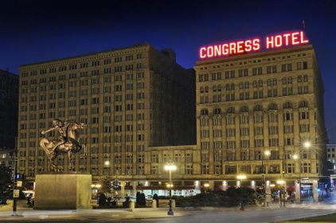
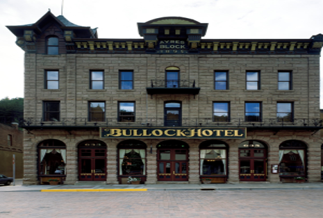
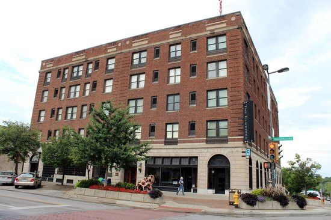
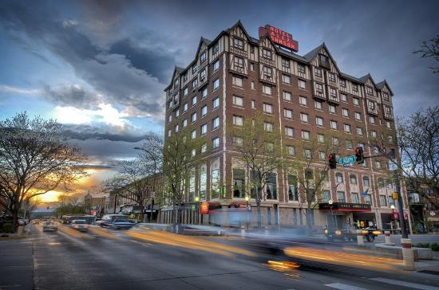

The Congress Plaza Hotel | 3-Star Hotel | (312)-427-3800
Based on a one night stay for two on January 9th, 2019
Hotel Rates
1 Queen Bed
1 King Bed
1 Lakeview King bed
$88
$99
$117
The Congress Plaza Hotel was rebuilt, after The Great Chicago Fire of 1871, for the 1893 World’s Columbian Exposition. It sits in downtown Chicago, adjacent to Grant Park, and is within walking distance to a lot of popular attractions in the city. The Congress Plaza is known as Chicago’s most haunted hotel, as it has numerous locations with reported apparitions, shadows, footsteps, and many more. This may be due to the long and violent history the hotel has. Along many deaths, Dr. H.H. Holmes, America’s first serial killer, used it to find victims. Al Capone was also known to stay frequently on the 8th floor in the north tower, where reportedly he still haunts. The Congress Plaza is also believed to be the inspiration for Stephen Kings "1408", and on the 12th floor, there is a room that’s been sealed off behind wallpaper due to being "too haunted".
Bullock Hotel
Deadwood, South Dakota

The Bullock Hotel | 2-Star Hotel |(800)-336-1876
Based on a one night stay on January 9th, 2019
Hotel Rates
1 Full Bed
1 Queen Bed
1 King Bed
$89
$99
$109
In 1876, Seth Bullock and Sol Star, to came to Deadwood, South Dakota from Helena, Montana, with a variety of hardware looking to open his hardware store. He built a successful hardware store and warehouse, as well as became the first sheriff of Deadwood. In 1894, a fire destroyed the hardware store leaving only the brick warehouse. After the fire, Bullock and Sol Star, decided to build Deadwood's finest hotel, The Bullock Hotel, over the store/warehouses remains. The Bullock Hotel was Bullocks pride and joy until he died. He reportedly loved the hotel so much that his spirit never left. He is known to haunt the hotel frequently and may be spotted roaming all floors of the hotel and throwing objects when staff is left with idle hands. People have reported the scent of burning cigars (Bullock was a heavy smoker), sounds of heavy boots walking, and his apparition appearing in mirrors. In the basement, the piano plays itself on some lonely nights. The hotel was featured on "Unsolved Mysteries" in 1992 and the show "Ghost Adventures".
The Eldridge Hotel
Lawernce, Kansas

The Eldridge Hotel | 3-Star Hotel | (785) 749-5011
Based on a one night stay on January 9th, 2019| *ADA Compliant
Hotel Rates
1 BedDeluxe King Suite
*1 Bed Queen Suite
1 Bed Premier King Suite
$139
$148
$158
Originally built as the Free State Hotel, The Eldridge Hotel was rebuilt by Colonel Shalor Eldridge, after pro-slavery forces burned the previous hotel down in 1856. In 1863, the hotel was attacked again and was destroyed by fire along with the rest of Lawrence in their bloodiest moment. Colonel Eldridge rebuilt the hotel, added a new floor, and vowed to build a new floor every time the hotel was destroyed. Perhaps Colonel Eldridge's attachment and dedication to this hotel, along with the massacred the town went through is why so many people have claimed to feel his, or someone's, presence. The Eldridge hotel was featured on A&E's Biography Channel's TV show "My Ghost Story" and has been visited by many ghost hunters who claim to feel eyes staring at them. One photographer snapped this picture of the lobby when the elevator door opened where a shadow can be seen standing in the doorway. Room 506 is where Colonel Eldridge is known to haunt the most, with the room seeing the most activity. It is also known as a "Portal to the other side" where spirits can supposedly can travel from their world to ours. Are you brave enough to stay in the portal to the other side? Stay a night and find out what mysteries lie within.
Hotel Alex Johnson
Rapid City, South Dakota

The Hotel Alex Johnsons | 3-star hotel | (605)-342-1210
Based on a one night stay on January 9th, 2019
Hotel Rates
1 Full Bed
1 King Bed
1 King Bed Deluxe W/ Wetbar
$139
$148
$158
The Hotel Alex Johnson was built 90 years ago, as a tribute to the Native Americans and black hills that surrounded the area. Due to this the hotel is filled with Native American decor. While the hotel may look beautiful, this hotel has a dark past and the spirits to prove it. Hotel Alex Johnson is home to a "Lady In White", a spirit who wanders the 8th floor. In the 70's, a bride was staying in room 810 when she flung herself from the window and into the void. Those who knew her best claimed she never would have done such a thing and suggested foul play. The fact that she was to inherit money soon may back up her friends' suspicions. Guest have reported the Lady in White walking around the 8th floor, searching for the reason behind her death. And in room 810, guests have reported the window opening itself in the night, as well as dresser drawers being taken out, turned upside down, and put back in all by themselves. Come stay at Hotel Alex Johnson and see if the Lady in White will make herself known. Hotel Alex Johnson has a "Ghost Package" that puts you in a haunted room, gives you a K2 meter, a $25 dinner credit, free access to the sky bar, and more